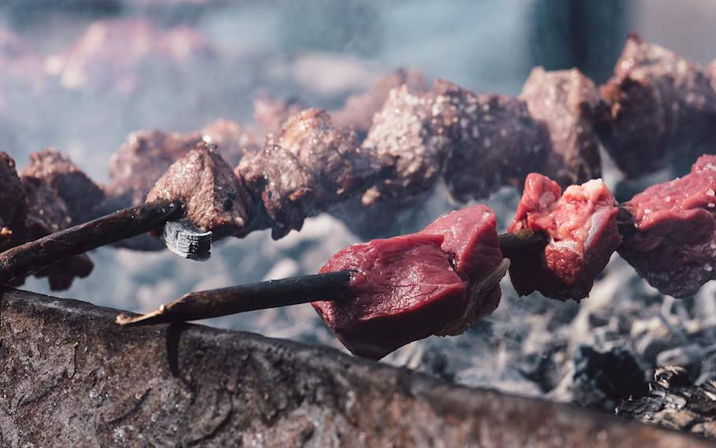

Espetada

Description
Soft cuts of beef — such as tenderloin, sirloin, or short loin — are cut into uniform cubes, seasoned with crushed garlic and bay (laurel) leaves, and skewered on bay wood. <\p>
A traditional method dictates grilling espetada over grape wood embers, although other types of non-resinous wood may be used.
Over the years, the original espetada evolved into other varieties with pork, various sausages, seafood, and vegetables, although beef espetada is still regarded as the most popular one
Ingredients
- 1 kg (2.2 lbs) beef tenderloin.
- 1 branch bay (laurel).
- 2 heads garlic.
- coarse salt.
- Cut the meat into equally-sized cubes, then set them aside.
- Crush the unpeeled garlic and bay leaves in a mortar.
- Skewer the meat on laurel wood skewers, making sure all the fatty parts face the same side.
- Rub the crushed garlic and bay leaves into the meat.
- Sprinkle will salt and cook over embers until browned, turning constantly.
- When the espetadas are cooked, shake off excess salt by hitting two skewers against each other.
- Serve hot with fried cornmeal milho frito, Madeiran flatbread bolo de caco, and some garlic butter.